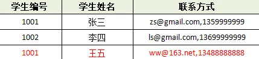
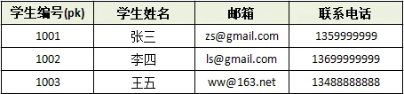
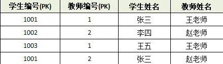
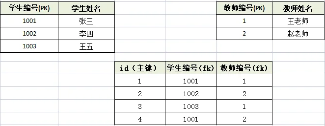
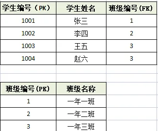
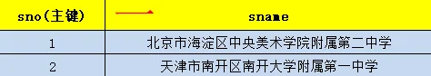
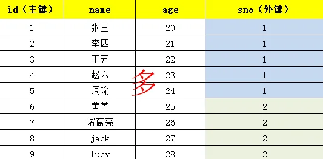
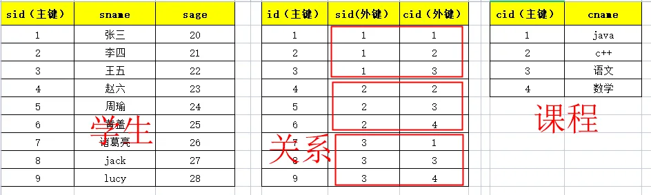
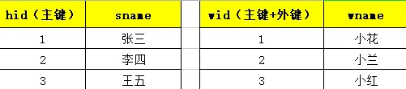
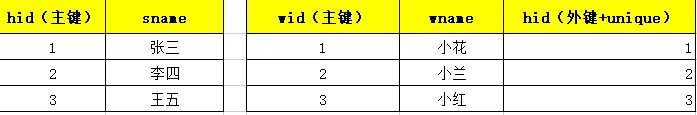

三范式
什么是数据库设计三范式
数据库表设计的原则。教你怎么设计数据库表有效，并且节省空间。
三范式
- 第一范式：任何一张表都应该有主键，每个字段是原子性的不能再分
- 以下表的设计不符合第一范式：无主键，并且联系方式可拆分。

- 应该这样设计：

- 第二范式：建立在第一范式基础上的，另外要求所有非主键字段完全依赖主键，不能产生部分依赖
- 以下表存储了学生和老师的信息

虽然符合第一范式，但是违背了第二范式，学生姓名、老师姓名都产生了部分依赖。导致数据冗余。
- 以下这种设计方式就是符合第二范式的：

- 第三范式：建立在第二范式基础上的，非主键字段不能传递依赖于主键字段
- 以下设计方式就是违背第三范式的（因为产生了传递依赖，导致班级名称冗余。）
- 以下这种方式就是符合第三范式的

一对多怎么设计
口诀：一对多两张表，多的表加外键。


多对多怎么设计
口诀：多对多三张表，关系表添加外键。

一对一怎么设计
两种方案：
- 第一种：主键共享

- 第二种：外键唯一

最终的设计
最终以满足客户需求为原则，有的时候会拿空间换速度。